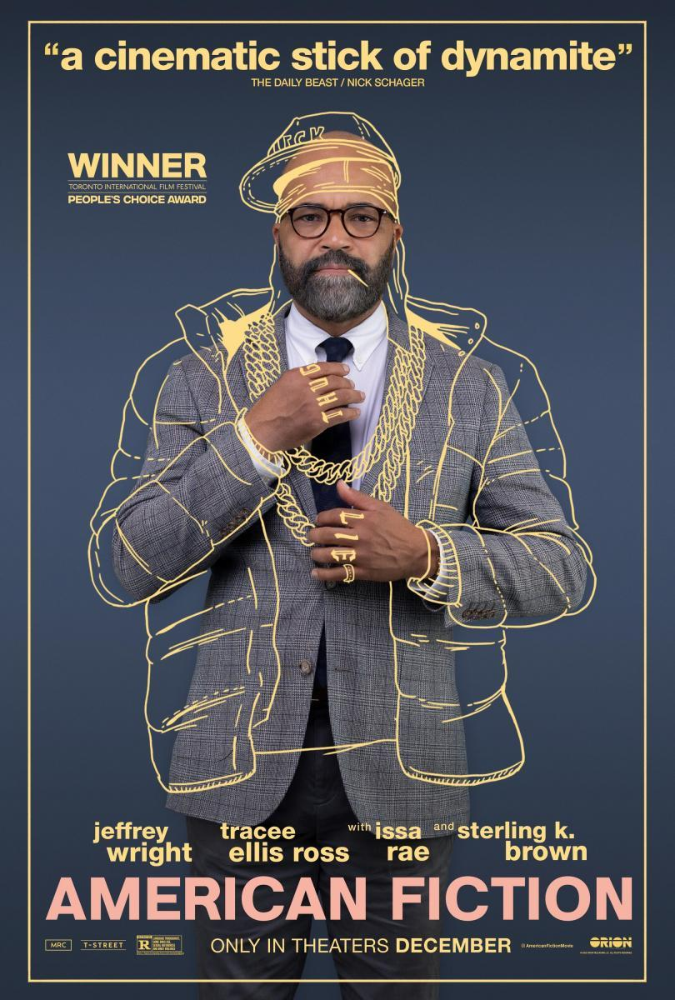

PELICULAS GANADORAS DE LOS OSCAR
Actualizamos en directo los ganadores de los Premios Oscar 2024, los grandes galardones de Hollywood que se entregaron en la noche del domingo 10 de marzo.
La temporada de premios del cine ha llegado a su fin. Con la lista de ganadores de los Globos de Oro 2024 ya completa, y todavía de resaca tras los Premios Goya 2024, y los Fotogramas de Plata 2023, es el momento de repasar el gran final de la carrera de galardones que han terminado con los Premios Oscar 2024
Ganadores de los Premios Oscar 2024
Premio Oscar 2024 a Mejor Película :
-'American Fiction'
-'Anatomía de una caída'
-'Barbie'
-'Oppenheimer'
RESUMENES
American Fiction:
“American Fiction” narra la historia de Thelonious “Monk” Ellison, un escritor cuya carrera se ha estancado porque su obra no es considerada “suficientemente negra”.
Entonces, harto de que la clase dirigente se beneficie del entretenimiento basado en tópicos manidos y ofensivos, este novelista frustrado utiliza un seudónimo para escribir su propio libro “negro”, un texto que lo lleva al corazón de la hipocresía y la locura que dice despreciar.
No obstante, el éxito inmediato del libro lo obliga a profundizar en su supuesta identidad y pone en tela de juicio sus estrechas concepciones del mundo.
PERSONAJES
A continuación, conoce a los integrantes del elenco de “American Fiction”:
- Jeffrey Wright como Thelonious “Monk”
- Tracee Ellis Ross como Lisa Ellison
- Issa Rae como Sintara Golden
- Sterling K. Brown como Clifford “Cliff” Ellison
- John Ortiz como Arthur

Anatomia de una caida:
Sandra, una escritora alemana, vive con su marido Samuel y su hijo ciego, Daniel, en un chalet en medio de los Alpes franceses. Cuando Samuel fallece en misteriosas circunstancias, la investigación no puede determinar si se trata de un suicidio o de un homicidio. Sandra es arrestada y juzgada por asesinato, y el proceso pone su tumultuosa relación y su ambigua personalidad en el punto de mira.
PERSONAJES
A continuación, conoce a los integrantes del elenco de “Anatomia de una caida”:
- Sandra Hüller como Sandra
- Swann Arlaud como Vincent
- Jehnny Beth como Marge
- Samuel Theis como Samuel Maleski
- Antoine Reinartz como Avocat général
Barbie:
'Barbie' nos transporta directos a 'Barbieland', el utópico paraíso en el que viven todas las Barbies jamás inventadas (sí, también aquellas que fueron rápidamente sacadas del mercado). Allí conoceremos a 'Barbie Estereotípica', la muñeca de Mattel original, interpretada por Margot Robbie, que empezará a experimentar una serie de "defectos" que la alejan de la perfección que se espera de ella.
En un mundo donde todo funciona como un reloj, y donde los rostros siempre tienen dibujada una sonrisa, los pensamientos trascendentales sobre la muerte y la celulitis no tienen cabida.
Para encontrar una solución a su problema, Barbie tendrá que salir al mundo real y encontrar la causa que ha provocado su "fallo de funcionamiento". Al hacerlo, descubrirá un mundo completamente nuevo. Con sus ventajas... y sus inconvenientes.
La acompañará su Ken asignado, Ryan Gosling, que también experimentará toda una revelación al descubrir que en el mundo humano no es "solo Ken" sino que es un hombre, con todos los privilegios que ello supone (algo que nada habitual en su tierra natal).
PERSONAJES
A continuación, conoce a los integrantes del elenco de “Barbie”:
- Margot Robbie como Barbie
- Ryan Gosling como Ken
- Will Ferrell como Mattel CEO
- Kate McKinnon como Weird Barbie
- America Ferrera como Gloria

Oppenheimer:
Tras construir con éxito la bomba atómica, Oppenheimer tuvo que enfrentarse al descrédito de parte del gobierno americano por sus inclinaciones comunistas en el pasado. El físico vio cómo le arrebataban los credenciales de seguridad de la comisión atómica, pero la opinión popular siguió estando mayoritariamente de su lado como un héroe de guerra.
Sin embargo, el verdadero final de la película es la revelación de lo que se dijeron Albert Einstein y Oppenheimer en una conversación que nos mantiene en vilo gran parte de la película.
Oppenheimer le pregunta a Einstein si recuerda cuando le mostró los cálculos que teorizaban que podrían destruir el mundo. Einstein dice que sí. Después de todo, ¿cómo podría uno olvidar algo así? Oppenheimer responde que, en realidad, eso es exactamente lo que hicieron.
PERSONAJES
A continuación, conoce a los integrantes del elenco de “Oppenheimer”:
- Cillian Murphy como J. Robert Oppenheimer
- Robert Downey Jr. como Lewis Strauss
- Emily Blunt como Kitty Oppenheimer
- Florence Pugh como Jean Tatlock
- Gary Oldman como Harry S. Truman

CATEGORIAS
- La cinta “American Fiction” ganó este domingo el premio a mejor guion adaptado
- Como una película cargada de inquietud por la capacidad humana para la destrucción masiva, “Oppenheimer” fue coronada como mejor película en la entrega de los premios Oscar